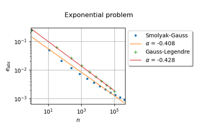

Design of experiments¶
Create a composite design of experiments
Create a composite design of experiments
Create a Monte Carlo design of experiments
Create a Monte Carlo design of experiments
Probabilistic design of experiments
Probabilistic design of experiments

Create a random design of experiments
Create a random design of experiments

Create mixed deterministic and probabilistic designs of experiments
Create mixed deterministic and probabilistic designs of experiments
Create a design of experiments with discrete and continuous variables
Create a design of experiments with discrete and continuous variables


Create a deterministic design of experiments
Create a deterministic design of experiments


Generate low discrepancy sequences
Generate low discrepancy sequences



Use the Smolyak quadrature